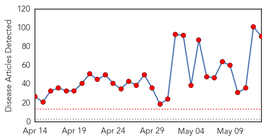
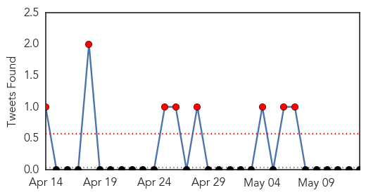
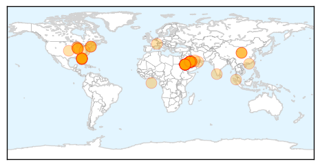
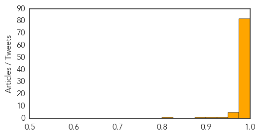

Toggle navigation
Early Warning
Daily Alerts
Middle East Respiratory Syndrome
May 13, 2014
Compare to:
-
Dengue Fever
Hemmorhagic Fever
Mold/Fungal Infection
Influenza
Meningitis
Pertussis / Whooping Cough
Cholera
Hepatitis
Chikungunya
Yellow Fever
Bubonic Plague
West Nile Virus
Swine Flu
Ebola
Measles
Unknown
Mumps
30 Day Trends
Web: 30
alerts
, 0
warnings
Twitter: 8
alerts
, 0
warnings
Top Articles:
Showing top 50 articles...
1.000
Health workers in Orlando checked for MERS
1.000
2nd US Case Of MERS Reported In Florida
1.000
MERS case in Florida doing well, 20 Orlando hospital staff sent home
1.000
Second USA case of MERS reported
1.000
8 Things You Should Know About MERS
1.000
Indiana hospital workers get clean bill of health after MERS scare
1.000
2nd US case of MERS reported
1.000
Homeland Security News Wire
1.000
CDC announces second imported case of Middle East Respiratory Syndrome (MERS) in the United States
1.000
Second MERS case identified in US
1.000
Health workers in Orlando checked for MERS virus
1.000
Health workers in Orlando checked for MERS virus
1.000
What is MERS Virus? Signs, Symptoms and Treatment; How to Prevent It? Prevention
1.000
5 New MERS Deaths in Saudi Arabia as US Confirms 2nd Case
1.000
Florida MERS Patient Visited Two Hospitals
1.000
2nd U.S. MERS patient traveled through Atlanta
1.000
What Is MERS?
1.000
Second U.S. MERS Case Reported In Orlando
1.000
Officials 2nd U S case of MERS reported in Orlando
1.000
Saudi Arabia reports 5 more MERS deaths
0.999
Traveler with 2nd MERS case flew through Atlanta
0.999
WHO holds emergency meeting on deadly MERS virus
0.999
WHO holds emergency meeting on deadly Saudi MERS virus
0.999
WHO holds emergency meeting on deadly Saudi MERS virus
0.999
Has MERS reached emergency status, WHO asks?
0.999
Saudis to microchip camels amid MERS fear
0.999
WHO holds emergency meeting on deadly Saudi MERS virus
0.999
UK health authorities say second U.S. MERS case flew via London
0.999
UPDATE 1-WHO holds emergency meeting on deadly Saudi MERS virus
0.999
US confirms second case of lethal MERS virus
0.999
MERS Virus Suspected in Illnesses of 2 Florida Hospital Workers
0.999
World Health Organization Holds Emergency Meeting On Deadly MERS Virus
0.999
Saudi to microchip camels as Mers death toll mounts
0.999
Expert panel weighing whether MERS is a public health emergency
0.999
2 health care workers exposed to MERS patient had flu-like symptoms
0.999
2 health care workers exposed to MERS patient had flu-like symptoms
0.999
Second U.S. case of MERS confirmed
0.999
Second US Case of MERS Has Boston Connection
0.999
Two Florida Hospital Workers May Be Exposed to MERS Virus
0.999
Tests for two 'potential' US Mers cases
0.999
WHO holds emergency meeting on deadly Saudi MERS virus
0.999
WHO holds emergency meeting on deadly Saudi MERS virus
0.999
2nd U.S. case of deadly, new strain of MERS in Florida
0.999
Expert panel to decide if MERS outbreak is international public health emergency
0.999
2 US health workers hospitalized after being exposed to MERS
0.999
UK health authorities say second U.S. MERS case flew via London
0.999
Is MERS a public emergency? Expert panel debates spread of deadly SARS-like virus as it lands in Florida
0.999
MERS virus close to becoming a public health emergency
0.999
Experts to advise WHO on whether MERS is a public health emergency - National
0.999
DH closely monitors additional MERS case in United States
Top Tweets:
No tweets found for May 13, 2014
Web/News Articles

Tweets

Article Locations

Article Confidences
